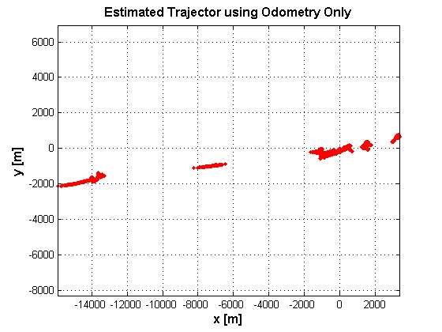

clear all
close all
clc
FileName = 'LaserData02';
load(FileName);
FileName = 'aa3_dr.mat' ;
load(FileName);
FileName = 'aa3_gpsx.mat' ;
load(FileName);
sigmaV = 0.05;
sigmaG = (3.0*pi/180);
Q = [sigmaV^2 0; 0 sigmaG^2];
sigmaR = 0.5;
sigmaB = (6*pi/180);
R = [sigmaR^2 0; 0 sigmaB^2];
x = [0; 0; atan2(Lo_m(2)-Lo_m(1),La_m(2)-La_m(1))];
P = eye(3);
h = waitbar(0,'Please wait...');
for ii=1:length(time)-1,
tCurrent = time(ii)/1000.0;
tNext = time(ii+1)/1000.0;
u(1) = speed(ii);
u(2) = steering(ii);
ind = find( (timeLaser>tCurrent) & (timeLaser<=tNext) );
if isempty(ind),
dt = tNext - tCurrent;
[x, P] = prediction_step(x,P,u,Q,dt);
else
z = [xyLaser{ind}.r; xyLaser{ind}.phi];
L = length(xyLaser{ind}.r);
c = zeros(1,L);
dt = tNext - tCurrent;
[x, P] = prediction_step(x,P,u,Q,dt);
end
xout(:,ii) = x(1:3);
waitbar(ii/length(time),h);
end
close(h);
figure(2)
plot(xout(1,:),xout(2,:),'r.'); grid on
xlabel('x [m]','FontSize',12,'FontWeight','bold');
ylabel('y [m]','FontSize',12,'FontWeight','bold');
title('Estimated Trajector using Odometry Only','FontSize',12,'FontWeight','bold');
axis equal
